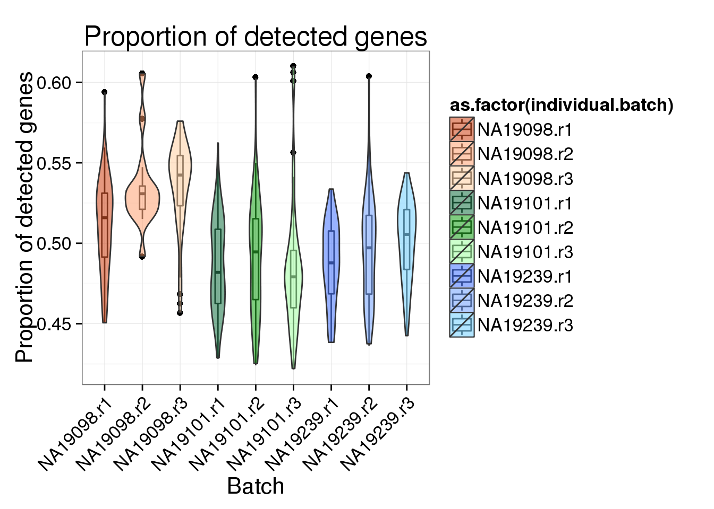
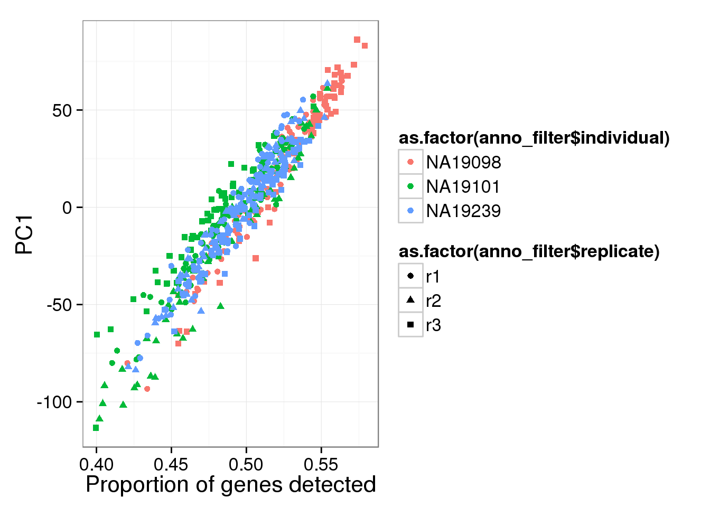
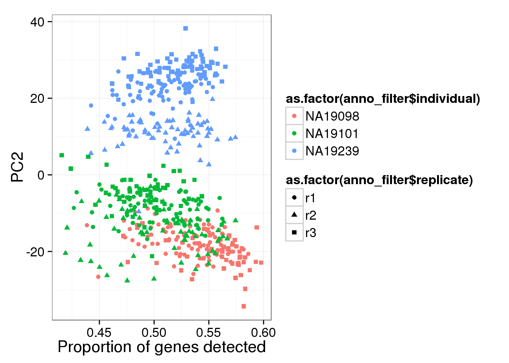
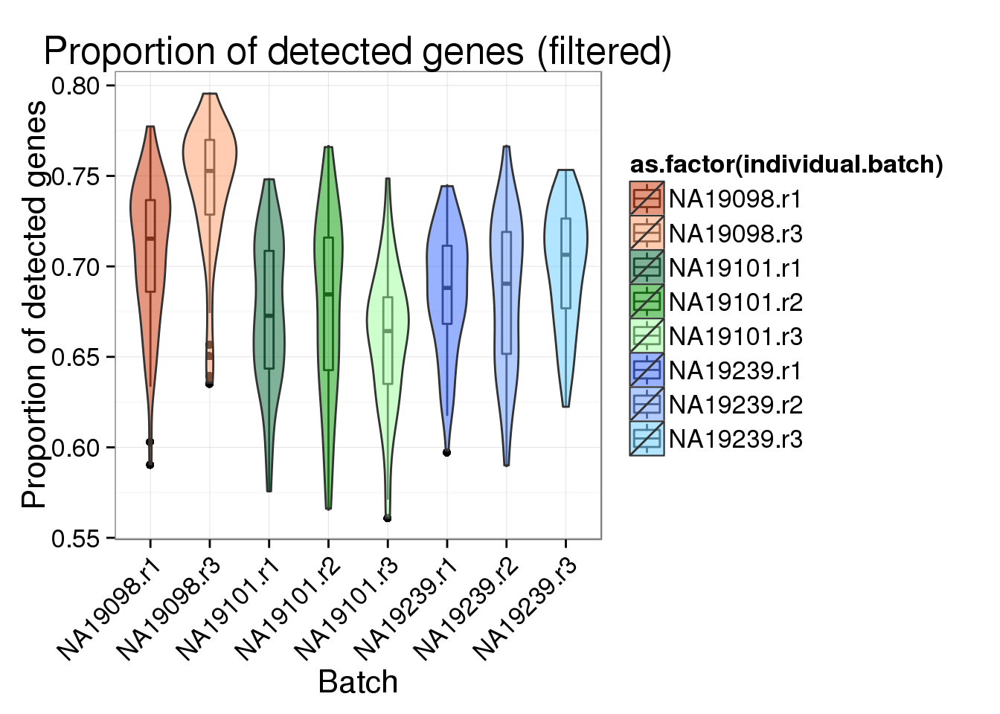
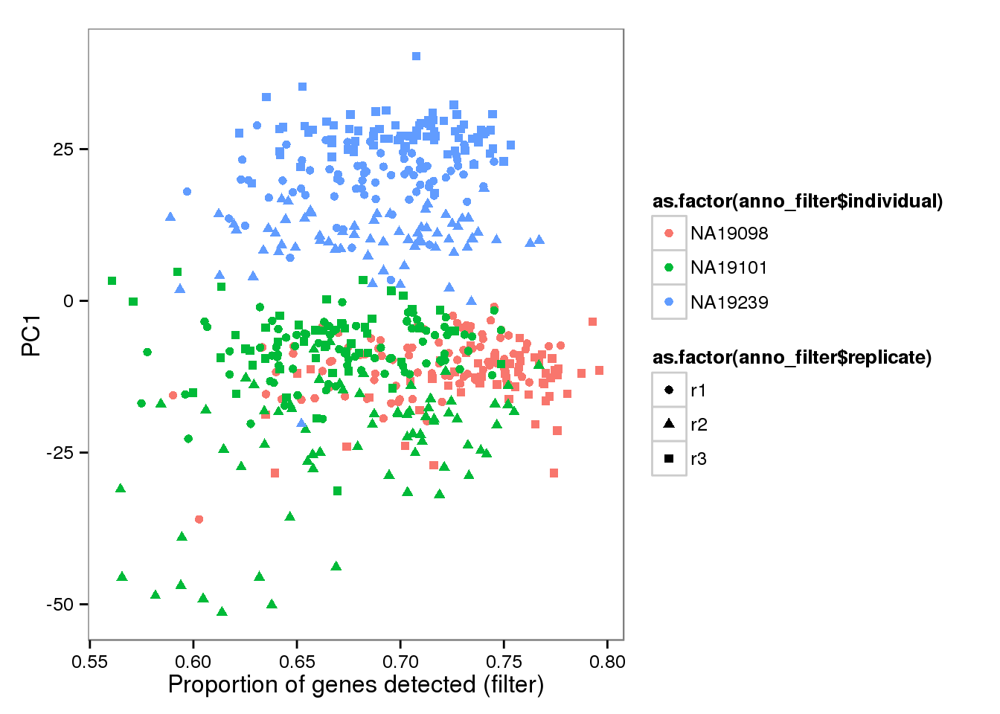
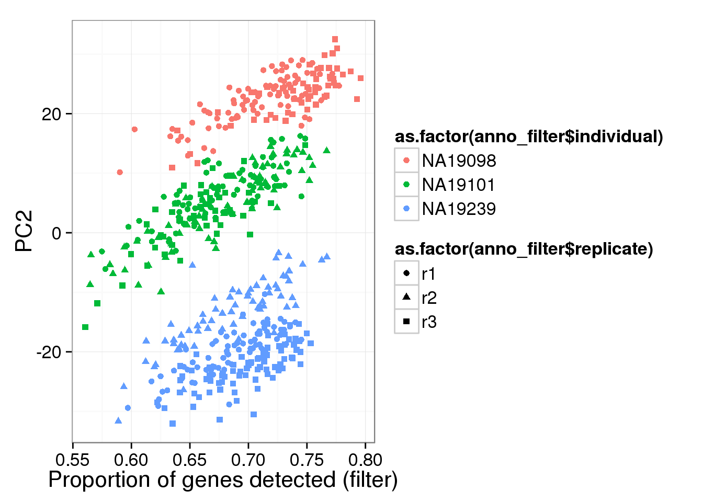
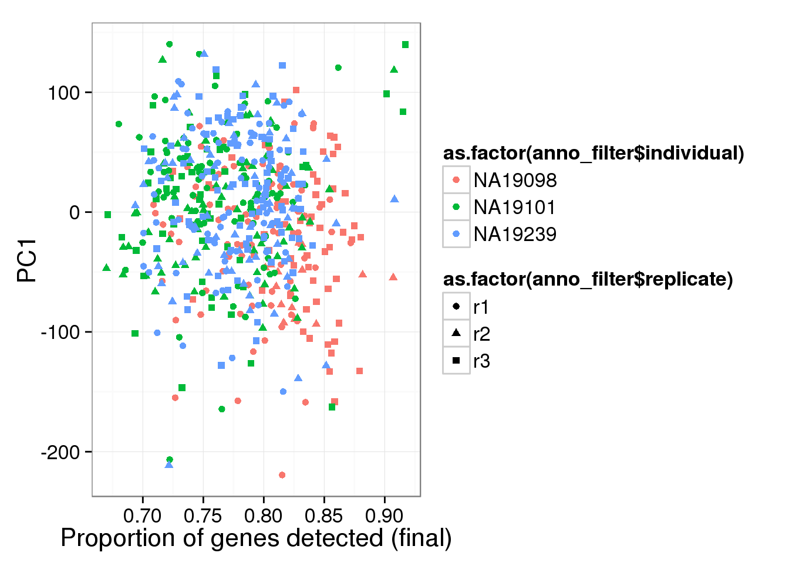
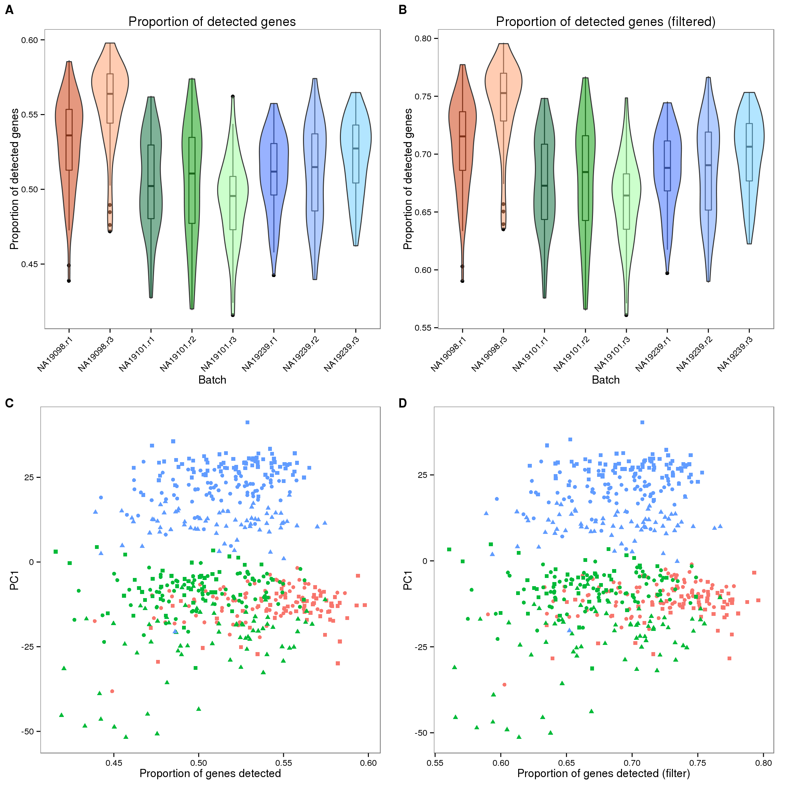

Last updated: 2016-01-23
Code version: 71bca2eedc500d1e5da32d526ba2127cb9aa7a63
The purpose is to see if removing the lowly expressed genes or using the final data (after correction of batch effect) would have any effect on the correltaion of PC1 and proportion of gene detected.
source("functions.R")
library("edgeR")Loading required package: limmalibrary(ggplot2)
library("cowplot")
Attaching package: 'cowplot'
The following object is masked from 'package:ggplot2':
ggsavetheme_set(theme_bw(base_size = 16))Input annotation
anno <- read.table("../data/annotation.txt", header = TRUE,
stringsAsFactors = FALSE)
anno_filter <- read.table("../data/annotation-filter.txt", header = TRUE,
stringsAsFactors = FALSE)Input molecule counts
molecules <- read.table("../data/molecules.txt", header = TRUE,
stringsAsFactors = FALSE)
molecules_filter <- read.table("../data/molecules-filter.txt", header = TRUE,
stringsAsFactors = FALSE)
molecules_final <- read.table("../data/molecules-final.txt", header = TRUE,
stringsAsFactors = FALSE)
## qc cell
molecules_qc <- molecules[,colnames(molecules_filter)]
stopifnot(anno_filter$sample_id == colnames(molecules_qc))Input read counts
reads <- read.table("../data/reads.txt", header = TRUE,
stringsAsFactors = FALSE)
reads_filter <- read.table("../data/reads-filter.txt", header = TRUE,
stringsAsFactors = FALSE)
## qc cell
reads_qc <- reads[,colnames(reads_filter)]
stopifnot(anno_filter$sample_id == colnames(reads_qc))First look at the data set before removing lowly expressed genes (genes with low counts)
Remove genes with zero count in the single cells
expressed_single <- rowSums(molecules_qc) > 0
molecules_single <- molecules_qc[which(expressed_single), ]
reads_single <- reads_qc[expressed_single, ]require(matrixStats)Loading required package: matrixStats
matrixStats v0.14.0 (2015-02-13) successfully loaded. See ?matrixStats for help.number_nonzero_cells <- colSums(molecules_single != 0)
number_genes <- dim(molecules_single)[1]
molecules_prop_genes_detected <-
data.frame(prop = number_nonzero_cells/number_genes,
individual = anno_filter$individual,
individual.batch = anno_filter$batch)
## create a color palette with one color per individual and different shades for repplicates
great_color <- c("#CC3300", "#FF9966", "#FFCC99", "#006633", "#009900", "#99FF99", "#3366FF", "#6699FF", "#66CCFF")
genes_detected_plot <- ggplot(molecules_prop_genes_detected,
aes(y = prop, x = as.factor(individual.batch), fill = as.factor(individual.batch))) +
geom_boxplot(alpha = .01, width = .2, position = position_dodge(width = .9)) +
geom_violin(alpha = .5) +
scale_fill_manual(values = great_color) +
labs(x = "Batch",
y = "Proportion of detected genes",
title = "Proportion of detected genes") +
theme(axis.text.x = element_text(hjust=1, angle = 45))
genes_detected_plot
Principal component analysis on log2 transformed values. We avoid log of 0’s by add 1’s. In addition, our PCA analysis requires that every gene needs to be present in at least one of the cells.
molecules_single_log2_pca <- run_pca( log2( molecules_single + 1 ) )
pc1_plot <- qplot(y = molecules_single_log2_pca$PCs[,1],
x = molecules_prop_genes_detected$prop,
shape = as.factor(anno_filter$replicate),
colour = as.factor(anno_filter$individual),
xlab = "Proportion of genes detected",
ylab = "PC1",
title = "Proportion of genes detected")
pc1_plot
qplot(y = molecules_single_log2_pca$PCs[,2],
x = molecules_prop_genes_detected$prop,
shape = as.factor(anno_filter$replicate),
colour = as.factor(anno_filter$individual),
xlab = "Proportion of genes detected",
ylab = "PC2") 
require(matrixStats)
number_nonzero_cells_filter <- colSums(molecules_filter != 0)
number_genes_filter <- dim(molecules_filter)[1]
molecules_prop_genes_detected_filter <-
data.frame(prop = number_nonzero_cells_filter/number_genes_filter,
individual = anno_filter$individual,
individual.batch = anno_filter$batch)
genes_detected_filter_plot <- ggplot(molecules_prop_genes_detected_filter,
aes(y = prop, x = as.factor(individual.batch), fill = as.factor(individual.batch))) +
geom_boxplot(alpha = .01, width = .2, position = position_dodge(width = .9)) +
geom_violin(alpha = .5) +
scale_fill_manual(values = great_color) +
labs(x = "Batch",
y = "Proportion of detected genes",
title = "Proportion of detected genes (filtered)") +
theme(axis.text.x = element_text(hjust=1, angle = 45))
genes_detected_filter_plot
molecules_filter_log2_pca <- run_pca( log2( molecules_filter + 1 ) )
pc1_filter_plot <- qplot(y = molecules_filter_log2_pca$PCs[,1],
x = molecules_prop_genes_detected_filter$prop,
shape = as.factor(anno_filter$replicate),
colour = as.factor(anno_filter$individual),
xlab = "Proportion of genes detected (filter)",
ylab = "PC1",
title = "Proportion of genes detected (filter)")
pc1_filter_plot
qplot(y = molecules_filter_log2_pca$PCs[,2],
x = molecules_prop_genes_detected$prop,
shape = as.factor(anno_filter$replicate),
colour = as.factor(anno_filter$individual),
xlab = "Proportion of genes detected (filter)",
ylab = "PC2") 
molecules_final_pca <- run_pca(molecules_final)
pc1_final_plot <- qplot(y = molecules_final_pca$PCs[,1],
x = molecules_prop_genes_detected_filter$prop,
shape = as.factor(anno_filter$replicate),
colour = as.factor(anno_filter$individual),
xlab = "Proportion of genes detected (final)",
ylab = "PC1",
title = "Proportion of genes detected (final)")
pc1_final_plot
theme_set(theme_bw(base_size = 12))
plot_grid(genes_detected_plot + theme(legend.position = "none"),
genes_detected_filter_plot + theme(legend.position = "none"),
pc1_plot + theme(legend.position = c(.87,.35)) + labs(col = "Individual", shape = "Replicate"),
pc1_filter_plot + theme(legend.position = "none"),
pc1_final_plot + theme(legend.position = "none"),
labels = LETTERS[1:5],
ncol = 2)
sessionInfo()R version 3.2.0 (2015-04-16)
Platform: x86_64-unknown-linux-gnu (64-bit)
locale:
[1] LC_CTYPE=en_US.UTF-8 LC_NUMERIC=C
[3] LC_TIME=en_US.UTF-8 LC_COLLATE=en_US.UTF-8
[5] LC_MONETARY=en_US.UTF-8 LC_MESSAGES=en_US.UTF-8
[7] LC_PAPER=en_US.UTF-8 LC_NAME=C
[9] LC_ADDRESS=C LC_TELEPHONE=C
[11] LC_MEASUREMENT=en_US.UTF-8 LC_IDENTIFICATION=C
attached base packages:
[1] stats graphics grDevices utils datasets methods base
other attached packages:
[1] testit_0.4 matrixStats_0.14.0 cowplot_0.3.1
[4] ggplot2_1.0.1 edgeR_3.10.2 limma_3.24.9
[7] knitr_1.10.5
loaded via a namespace (and not attached):
[1] Rcpp_0.12.0 magrittr_1.5 MASS_7.3-40 munsell_0.4.2
[5] colorspace_1.2-6 stringr_1.0.0 httr_0.6.1 plyr_1.8.3
[9] tools_3.2.0 grid_3.2.0 gtable_0.1.2 htmltools_0.2.6
[13] yaml_2.1.13 digest_0.6.8 reshape2_1.4.1 formatR_1.2
[17] bitops_1.0-6 RCurl_1.95-4.6 evaluate_0.7 rmarkdown_0.6.1
[21] labeling_0.3 stringi_0.4-1 scales_0.2.4 proto_0.3-10